初めて 触る 人 でも Zoom 面談 の 音声 を 自動で 議事録化 できる ように なる 手順書。 Chrome 拡張機能 の install から、 Zoom 面談 実行、 議事録 完成 まで、 実際 の スクリーンショット 付き で 全 flow 解説。
Zoom 面談 の 音声 を 自動 録音 する ため、 専用 Chrome 拡張機能 を install する。 Chrome Web Store 未公開 の ため zip を DL → 手動 install (unpacked mode)。
下 の button で zip DL (13KB)。 Downloads に FP-Compass-拡張機能.zip が 落ちる。
Downloads の zip を ダブルクリック → FP-Compass-拡張機能 フォルダ が できる。 Documents や Desktop に 移動 して 消さない ように する。
chrome://extensions/ を 開くChrome の URL バー に chrome://extensions/ を 貼り付け → Enter。 (または Chrome 右上 の … → 「拡張機能」 → 「拡張機能 を 管理」)
ページ 右上 の 「デベロッパー モード」 switch を ON。 左上 に 3 つ の button が 出る → 「パッケージ化 されていない 拡張機能 を 読み込む」 を click。
ファイル 選択 ダイアログ → 手順 2 で 展開 した FP-Compass-拡張機能 フォルダ を 選択 → 「開く」。
拡張機能 の カード が 出て、 version が 1.2.0 なら 完了。
Chrome 右上 の 拡張 アイコン (🧩) を click → 「FP Compass 議事録レコーダー」 の 隣 の 画鋲マーク を click で pin 固定 して おく と 便利 (常時 表示)。
Chrome で https://app.skeleton-inc.jp/ を 開くと login 画面 が 出る。
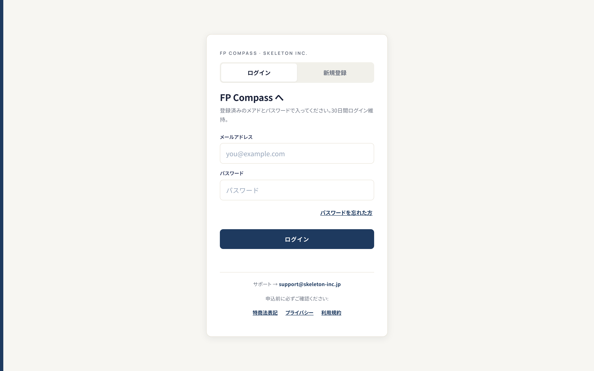
登録済み の メール と パスワード を 入れて 「ログイン」。 30日間 login 維持。
login 後、 dashboard (ホーム) が 出る。 左 サイドバー に 「顧客台帳」 「面談履歴」 「LINE オートメーション」 等 の nav。
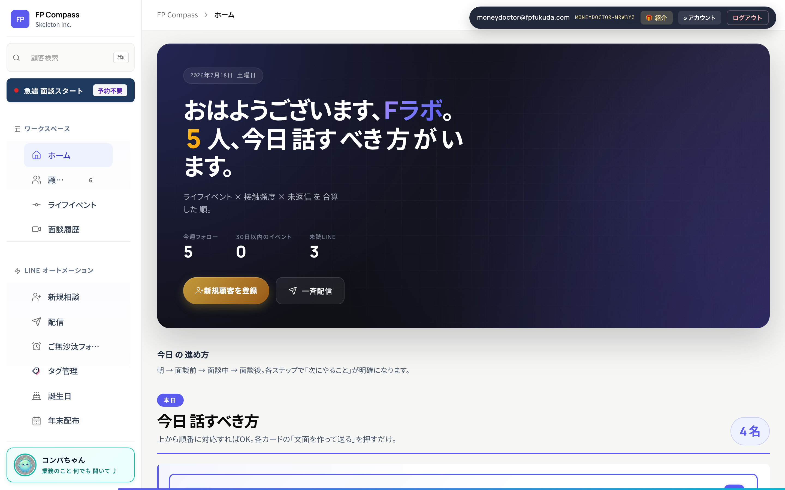
login 後、 左 サイドバー の 「顧客」 nav を click → 顧客台帳 が 出る。
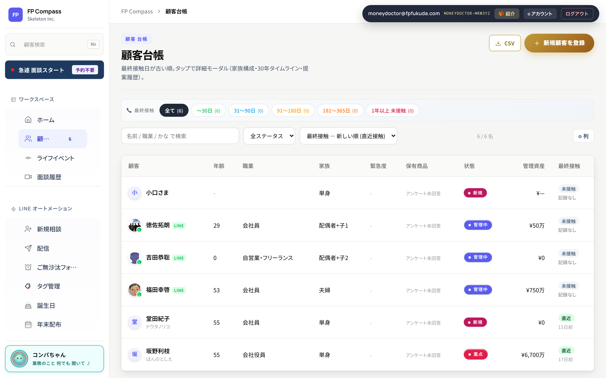
table の 客 の 行 を click → 右側 に 顧客カルテ が 開く。 上部 に 客名 + status、 その 下 に アクション button 群。
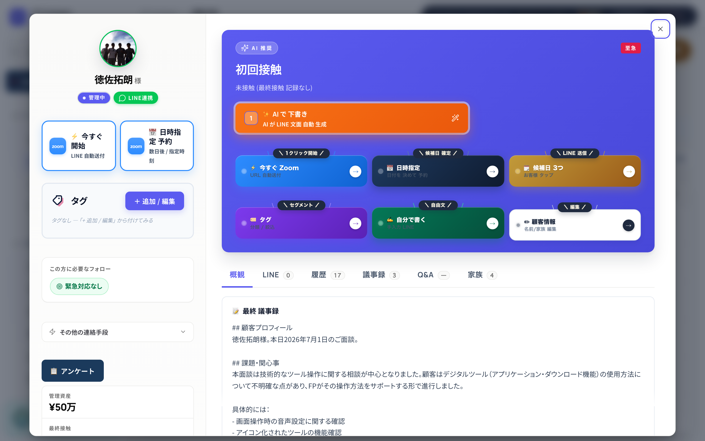
顧客カルテ の 中 に 青枠 の Zoom アイコン button が 2つ 並んで いる:
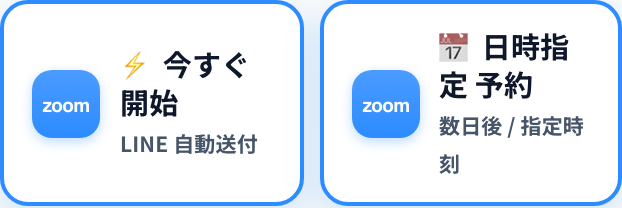
button click 後、 owner は 何 も しない。 裏で こう 動く:
普通 に Zoom で 面談する。 AirPods 使用中 でも 相手 の 声 と owner の 声 両方 録音される:
Zoom タブ を × で 閉じる だけ。 拡張 が 検知 → 自動 stop → 音声 blob を FP Compass に 送信 → Whisper で 文字起こし → Claude で 5 section 議事録 生成 → 顧客カルテ の 議事録タブ に 表示 (5〜10分)。
FP Compass 画面 右上 に 小さい パネル が 出る。 「今 拡張機能 が 何 を してる か」 が 全 段階 で 分かる。
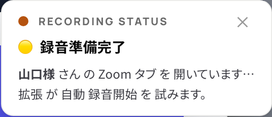
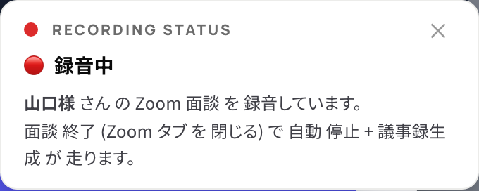
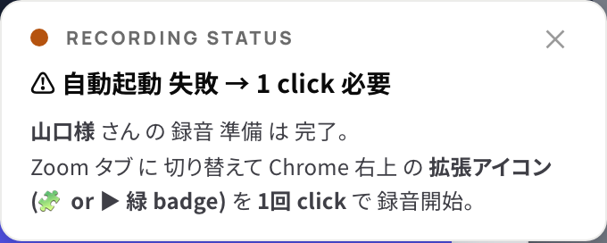
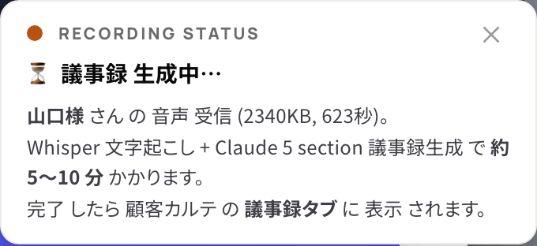
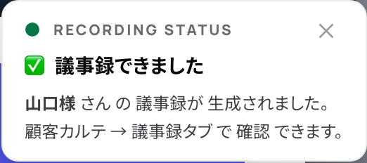
該当 客 の 顧客カルテ を 開く → 上部 の タブ で 「議事録」 を 選択。 過去 の 議事録 が 時系列 で 並ぶ。
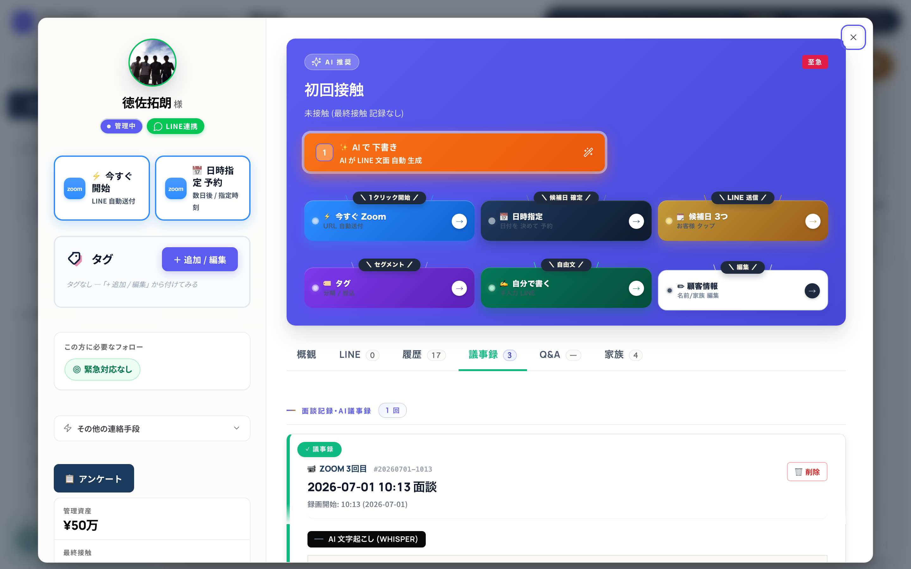
各 議事録 は 以下 5 セクション に 自動 分解 されて 表示 される (2026-07-17 以降 の 新規 面談):
数字 と 大事な語句 は 黄色 蛍光ペン で 目立つ。 詳細 デザイン は meeting-single.html で 確認 可能。
症状: 顧客カルテ を 開いても 「⚡ 今すぐ 開始」 button が 表示 されない。
原因: 旧 版 では LINE 紐付け 済 客 のみ 表示 だった。 2026-07-18 修正 で 全客 で 表示 に。
対処: FP Compass を Cmd+Shift+R (ハードリロード) → 新 UI が 反映される。
症状: HUD 右上 に ⚠ 橙 の 「自動起動 失敗」 表示。
原因: Chrome の セキュリティ で 自動 tabCapture が blocked。
対処: Zoom タブ に 切り替えて Chrome 右上 の 拡張 アイコン (▶ 緑 badge) を 1回 click → 録音 開始 (半自動)。
症状: Zoom button 押しても HUD が 出ない、 何 も 起きない。
対処:
chrome://extensions/ で 「FP Compass 議事録レコーダー」 が v1.2.0 か 確認window.__fpTabRecorder と 打って "1.2.0" が 返る か 確認症状: 議事録 で 相手 の 声 だけ、 自分の 声 が 入って ない。
対処:
症状: HUD が 「⏳ 議事録 生成中」 の まま 30分 以上 経つ。
対処: